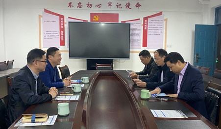
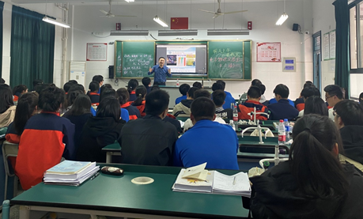

发布时间：2022-03-21 点击数：
为稳步扎实推进招生宣传工作，持续提升我校生源质量， 3月18日，招生就业处携现代信息技术学院赴金华市开展2022年招生宣传首行。 本次招生宣传由招生就业处处长温长胜带队，学院党总支书记任峰随行，走访金华市江南中学 ，聚焦提升学校认可度和影响力，服务考生，为后续招生宣传奠定坚实基础。

我院一行受到金华市江南中学校长蔡洪伟， 副校长徐宏杰，董事蒋磊等领导的热烈欢迎和宣讲工作上的大力支持 。走访交流中，温长胜处长从学校发展、校区分布、院系设置、设备投入、招生录取、就业升学、 国家和地区支持力度、本次提前招生情况等方面做主要说明， 任峰书记介绍了现代信息技术学院概况以及学院在人才培养、学生学业发展等方面的成绩效益。 江南中学校长蔡洪伟对浙江机电职业技术学院以及现代信息技术学院办学发展给予高度评价， 徐宏杰副校长对江南中学办学历程和学生生源情况做详细介绍，对我校提前招生专业设置、录取情况等做深入了解。 院、校双方就开展走访学习和共建优秀生源基地探讨交流。

深挖学生潜力，招生宣传深入到学生班级。 温长胜向同学们具体介绍了学校地理位置、发展前景、就业升学、优势平台资源， 对同学们感兴趣的专业设置和校园生活进行了图文并茂的展示，仔细解答了提前招生政策和报考步骤 鼓励同学们认真复习，积极备考，向着心中的理想前进 。现场答疑中，同学们对我校以及信息学院表达了浓厚兴趣和高度关注。 任峰对同学们报考机电学院及信息专业表示热烈欢迎。现 场宣讲3场次共200名高三毕业生参加，实发提前招生宣传页500份。宣讲氛围积极热烈，效果显著。